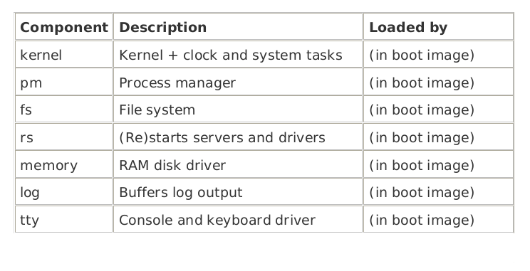
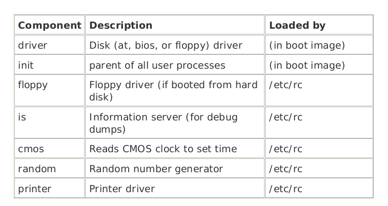

Startup
When computer is turned on, the hardware reads the first sector of the first track of the boot disk and executes the code it finds there
The sector contains the bootstrap program which loads the larger program, boot, which then loads the Operating System
If the boot disk is a hard disk, which is divided into partitions then the
first sector of the hard disk contains a small program and the
disk partition table collectively called Master boot
record. Program part is executed to read the partition table and the select the
active partition, which contains the
bootstrap program.
Sequence of loading
- Kernel
- Process Manager
- File System
- Reincarnation Server
- Init Program
The sequence of loading of minix operating system can be made more clear with following diagram


All parts of boot image are separate program i.e. Kernel, process manager, file system, init etc are all separate program. Init is the first user process and last process which is loaded as a part of boot image (in general).
In case of minix there are few processes that start running before init process. They are listed below:
- CLOCK and SYSTEM - they have no PID's and run within the kernel i.e. they are not visible to the user
-
Process Manager - The first process to run in user space and has PID 0. It has no child and no parent.
-
Reincarnation Server - Parent of all other processes that started from boot image.
Init is one of the child of reincarnation server. It runs /etc/rc shell script, which starts additional drivers and servers that are not a part of the boot image. All programs started by rc script is child of init process.
Service runs as a child of init process but has little variation from conventional process. Service is a user interface to reincarnation server which starts an ordinary program and converts service into system process. Service starts Floppy, CMOS, and Information Server(IS). After "CMOS" driver has been started, rc script can initialize the real time clock. All servers and drivers are inside '/sbin' directory and other commands needed for startup are in '/bin' directory.
After Initial Startup are completed File System such as '/usr' are mounted. rc checks for filesystem problem that might be the result of previous system crash.
-
When the system is shut down using shutdown command an entry is written to the login history file, "/usr/adm/wtmp". The command shutdown c checks if the last entry in wtmp is shutdown entry.
-
If not means abnormal shutdown and fsck is used to check file system.
Init reads /etc/ttytab which lists all potential terminal devices. Each login terminals have an entry in getty field of /etc/ttytab. Init forks child processes for each terminal and each child process execute /usr/bin/getty which prints a login message and waits for a name to be typed.
If some particular terminal requires special treatment then /etc/ttytab can specify a command (eg /usr/bin/stty) to be executed to initialize the line before running getty.
When user types the login name,
-
/usr/bin/login is called with name as argument.
-
login program checks if password is required, if yes then it prompts for and verifies the password
-
After successful login, login executes users shell i.e. /bin/sh by default, other shell may be specified in /etc/passwd file.
-
Shell waits for commands to be typed and then forks off new processes.
-
Shells are children of init and user processes are grand children of init.
Most important system calls for minix are fork and exec
-
fork is the only way to create new process
-
exec allows a process to execute a specified program
-
when a program is executed it is allocated a portion of memory whose size is specified in program files header.
All information about processes are kept in
process table
-
Process Table is divided into Kernel, process manager and file system
-
When a process comes into existence (by fork) or terminates (by exit) the process manager updates the process table first and then send messages to the file system and the kernel.